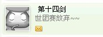

吴嫡将放弃参加2010年日本世团赛
#1 吴嫡将放弃参加2010年日本世团赛 作者：我就不信注册不上 发表时间：2010-1-7 1:21:49
#2 Re:吴嫡将放弃参加2010年日本世团赛 作者：极地剑客 发表时间：2010-1-7 7:52:06
记得03年还是05年在ORCBBS看见ANDO个性签名:停止做梦,开始生活...#3 Re:吴嫡将放弃参加2010年日本世团赛 作者：小丸.net 发表时间：2010-1-7 14:26:19
误传，肯定是误传
［ 我就不信注册不上 于 2010-1-8 22:12:40 时花50金币砸了你一个臭鸡蛋］
#4 Re:吴嫡将放弃参加2010年日本世团赛 作者：裁决殿雪月 发表时间：2010-1-7 15:17:24
这么多棋手 难道其他人就不行么……#5 Re:Re:吴嫡将放弃参加2010年日本世团赛 作者：孤竹 发表时间：2010-1-7 16:17:03
引用：刚刚看了第十四剑的QQ签名，真是如此
原文由 小丸.net 发表于 2010-1-7 14:26:19 :误传，肯定是误传

#6 Re:吴嫡将放弃参加2010年日本世团赛 作者：茗弈小刀 发表时间：2010-1-7 16:54:36
哎 ，感觉很沉重。
#7 Re:Re:吴嫡将放弃参加2010年日本世团赛 作者：菜包先生 发表时间：2010-1-7 17:44:16
引用：
原文由 茗弈小刀 发表于 2010-1-7 16:54:36 :哎 ，感觉很沉重。
沉重啥呀，五子棋又不能当饭吃。。。世界冠军也要生活噻
能理解
#8 Re:吴嫡将放弃参加2010年日本世团赛 作者：测试规则 发表时间：2010-1-7 20:25:12
中国五子棋也该一代新人换旧人了#9 Re:吴嫡将放弃参加2010年日本世团赛 作者：浪人痴痴 发表时间：2010-1-8 2:42:06
围观下！
#10 Re:吴嫡将放弃参加2010年日本世团赛 作者：舍露里 发表时间：2010-1-8 12:49:21
这个“嫡”看着有点别扭。。。
#11 Re:吴嫡将放弃参加2010年日本世团赛 作者：新柳如慧 发表时间：2010-1-8 13:15:17
如果真放弃，也表示理解。毕竟生活才是最重要的#12 Re:Re:吴嫡将放弃参加2010年日本世团赛 作者：我就不信注册不上 发表时间：2010-1-8 22:17:50
引用：真是服了，不了解情况还能如此肯定地去否定别人，哀悼ing
原文由 小丸.net 发表于 2010-1-7 14:26:19 :误传，肯定是误传
［ 我就不信注册不上 于 2010-1-8 22:12:40 时花50金币砸了你一个臭鸡蛋］

#13 Re:吴嫡将放弃参加2010年日本世团赛 作者：茗弈的飞猪 发表时间：2010-1-13 10:54:07
可惜啊，希望最后中国能派出缺失吴镝后的最强阵容。
同时祝愿吴镝一路走好。
［ 菜包先生 于 2010-1-21 14:57:05 时花50金币砸了你一个臭鸡蛋］
#14 Re:吴嫡将放弃参加2010年日本世团赛 作者：啥呀 发表时间：2010-1-21 7:43:05
事物发展的一般规律啊，变化，变化，惊诧叹惋之余，接受它并继续前行吧。
#15 Re:Re:吴嫡将放弃参加2010年日本世团赛 作者：菜包先生 发表时间：2010-1-21 14:56:37
引用：晕，这句话怎么看着这么别扭。。。。
原文由 茗弈的飞猪 发表于 2010-1-13 10:54:07 :同时祝愿吴镝一路走好。
#16 Re:吴嫡将放弃参加2010年日本世团赛 作者：天逸 发表时间：2010-1-23 3:16:34
lz还是改一下标题“吴嫡”的“嫡”字吧。。。。
希望吴镝老师在生活中如意吧~~